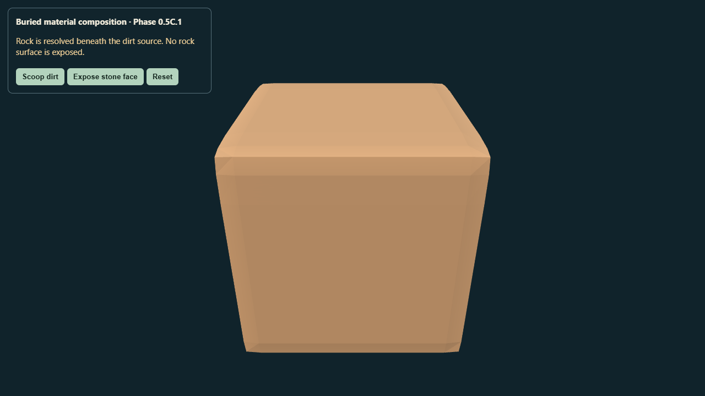
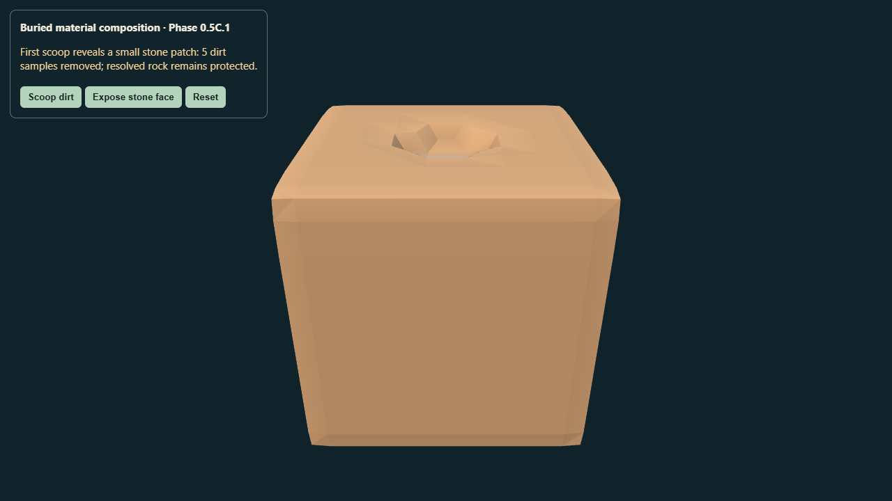
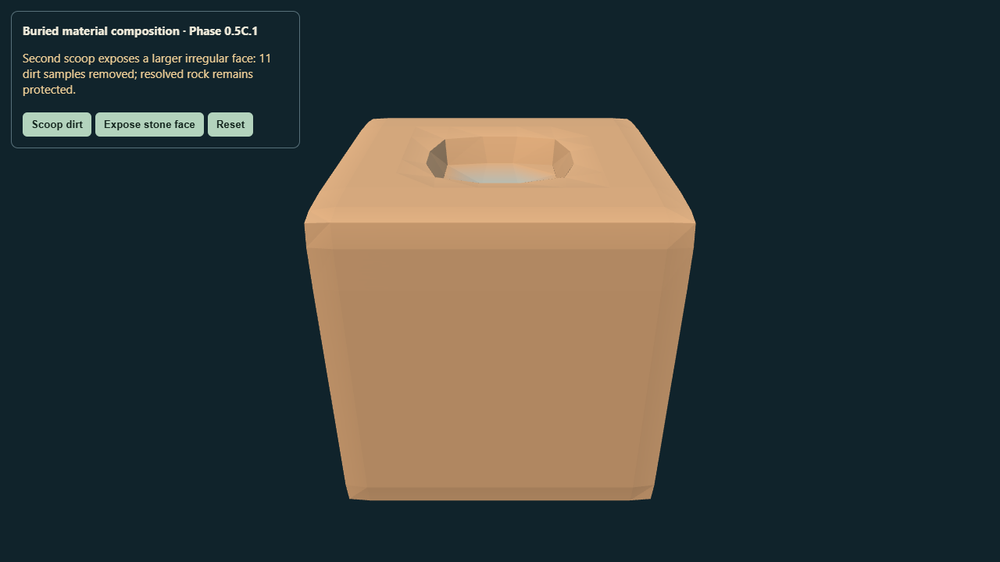
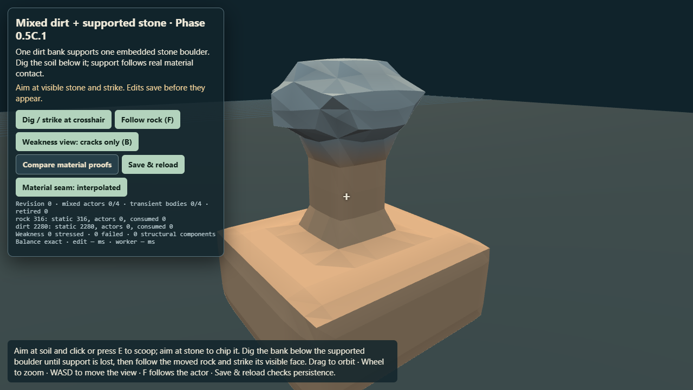
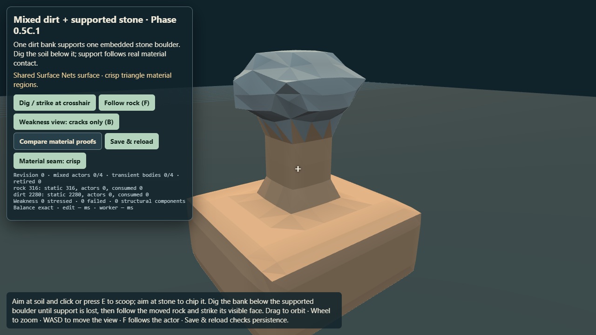

Phase 0.5C.1 · material composition and shared-surface seams
Read the engineering report. The 13³ mixed-matter control resolves rock over dirt once, then stores only authoritative density/material samples. The separate buried-rock preview removes dirt-owned samples in two stages.
Buried-rock reveal

Initial composed field: rock source is buried beneath dirt.
First scoop removes dirt samples only and exposes a small stone patch.
Further excavation opens the same continuous field; the resolved rock samples are preserved.
Matched seam comparison

Current vertex-color interpolation control.
Crisp mode assigns one resolved material to each triangle; positions/topology are unchanged.